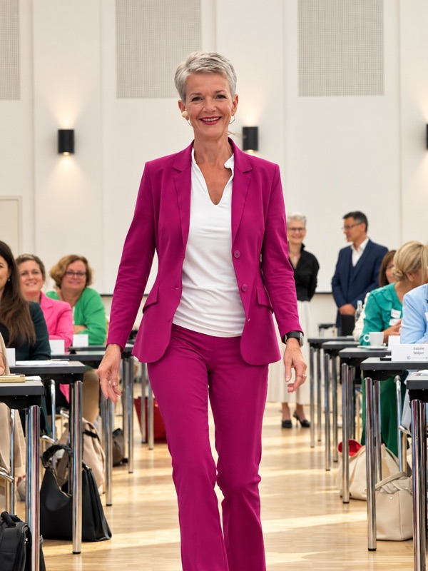
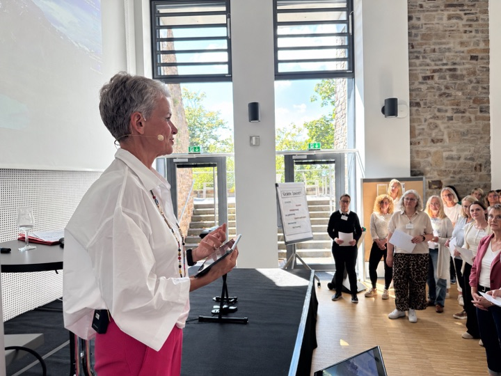

Die Situation verstehen
Ich spreche mit Auftraggebenden und ausgewählten Menschen aus der Zielgruppe, prüfe vorhandene Informationen und erkenne, welche Fragen offiziell genannt werden – und welche darunter liegen.
Inhouse-Assistenztage und Assistenzkonferenzen
Ein Assistenztag macht Wertschätzung sichtbar, stärkt das interne Netzwerk und übersetzt neue Anforderungen in konkrete nächste Schritte – anspruchsvoll genug für morgen und anschlussfähig an den Arbeitsalltag von heute.
Nicht über die Zielgruppe hinweg
Der inhaltliche Kern
Aufgaben, Erwartungen und Rollen verändern sich. Manche Themen fordern, andere eröffnen neue Möglichkeiten. Deshalb entwickle ich kein Standardprogramm, sondern ein Konferenzformat, das zu den Menschen, Themen und Herausforderungen in Ihrem Haus passt.
Ich spreche mit Auftraggebenden und ausgewählten Menschen aus der Zielgruppe, prüfe vorhandene Informationen und erkenne, welche Fragen offiziell genannt werden – und welche darunter liegen.
Aus Unternehmensziel, aktueller Rolle und Bedarf entsteht eine Leitidee. Sie entscheidet, welche Themen dazugehören, welche Formate tragen und welche Speaker wirklich passen.
Beispiel für einen Inhouse-Assistenztag
Ein kompakter Assistenztag kann Orientierung geben, individuelle Vertiefung ermöglichen und Menschen miteinander ins Gespräch bringen. Dieses reale Programmprinzip zeigt, wie viel in einen Tag passt, ohne ihn zu überladen.
Ein verständlicher Impuls zu KI und Rollenwandel schafft eine gemeinsame Ausgangsbasis – zugewandt, relevant und ohne Technik-Overload.
KI, Produktivität, Präsenz, Resilienz, Veränderung und Führung ohne Weisungsbefugnis: Die Teilnehmenden vertiefen, was zu ihrer Situation passt.
Wechsel und Pausen sind Teil der Dramaturgie. Sie machen Austausch möglich und lassen aus einzelnen Teilnehmenden ein Netzwerk entstehen.
Der gemeinsame Abschluss bündelt den Tag und übersetzt neue Perspektiven in einen konkreten nächsten Schritt für den Arbeitsalltag.
Das Prinzip: gemeinsamer Fokus, persönliche Auswahl, echte Begegnung und ein Abschluss, der den Transfer anstößt.
Eindruck aus dem Raum
Ein kurzer Blick auf die Energie, die entsteht, wenn Menschen nicht nur zuhören, sondern miteinander aktiv werden.
Wenn mehr Raum da ist
Für Organisationen, die mehr Zeit investieren möchten, kann eine mehrtägige Assistenzkonferenz unterschiedliche Bedürfnisse sinnvoll verbinden:
Ein geschützter Raum für Austausch: Was funktioniert bereits? Wo hakt es? Was können Kolleginnen und Kollegen voneinander übernehmen?
Neue Methoden, Prozesse und Technologien werden verständlich, konkret und anschlussfähig für den jeweiligen Arbeitsalltag.
Selbstführung, Kommunikation, Sichtbarkeit und Zusammenarbeit stärken die Fähigkeit, die neue Rolle aktiv auszufüllen.
Kein starres Dreitagespaket. Auch ein kompakter Fachtag oder eine andere Abfolge kann richtig sein. Entscheidend ist die Wirkung, nicht die Schablone.
Mögliche Themenfelder
Die Auswahl folgt dem Bedarf Ihrer Zielgruppe. Themen werden nicht nebeneinandergestellt, sondern über eine gemeinsame Frage miteinander verbunden.

Vom Organisieren zum Mitdenken, Mitgestalten und verantwortlichen Sparringspartner.
KI, digitale Werkzeuge, Prozesse und Methoden so vermitteln, dass Anwendung statt Überforderung entsteht.
Klar auftreten, Erwartungen verhandeln, Zusammenarbeit steuern und den eigenen Beitrag sichtbar machen.
Prioritäten, Grenzen, Resilienz und Entscheidungen in einer anspruchsvollen Schnittstellenrolle.
Austausch nicht als nette Pause behandeln, sondern als bewusstes Lern- und Arbeitsformat.

Erfahrung im Raum
Ich habe selbst als Vorstandsassistenz gearbeitet und weiß, wie anspruchsvoll diese Rolle sein kann. Dazu kommen acht Assistenzkonferenzen, die ich selbst konzipiert und begleitet habe.
Diese Erfahrung hilft mir heute sehr. Ich weiß, welche Themen Assistenzen wirklich beschäftigen, welche Speaker auf dem Papier stark wirken, aber im Raum nicht ankommen – und wann es besser ist, miteinander ins Gespräch zu kommen, statt noch einen Vortrag anzuhängen.
Trotzdem gehe ich nicht mit einem fertigen Konzept in einen Auftrag. In den Gesprächen mit Ihnen höre ich genau hin: Was ist diesmal anders? Was braucht diese Gruppe? Und was soll am Ende des Tages hängen bleiben?
Was ich übernehmen kann
Sie buchen die Teile, die Sie brauchen. Ich halte dabei den inhaltlichen Zusammenhang im Blick und spreche Widersprüche oder Lücken früh an.
Zielgruppenanalyse, Leitidee, Themenfelder, Dramaturgie und Formate.
Recherche, Auswahl, Ansprache, Koordination und inhaltliches Briefing.
Vorbereitung und persönliche Moderation mit klaren Übergängen, Beteiligung und inhaltlichem roten Faden.
Eigene Ansicht, Kapazitäten und Warteliste, Buchung und Stornierung von Tracks, Erinnerungen, Feedback und Auswertung.
Preis nach Erstgespräch – passend zu Umfang, Vorarbeit und Verantwortungsbereich.
Termin buchenStimmen aus der Praxis
Die Rückmeldungen zeigen, was neben guten Inhalten zählt: eine stimmige Mischung, Raum für Austausch und Themen, die zur Arbeit von Assistenzen passen.
Das Forum hat nicht nur den Charakter des Lernens und der Mitnahme der Inhalte, sondern gibt eine wunderbare Gelegenheit zum Netzwerken. Die Balance zwischen beiden ist perfekt, um dieses Forum jeder Assistenz weiterzuempfehlen. Die Beiträge sind wunderbar von Andrea ausgewählt und super auf die Arbeit der Assistenzen abgestimmt. Ich fahre immer wieder gerne zum Forum und habe auch schon die eine oder andere motiviert zu kommen.
Andrea Kaden ist eine absolute Bereicherung für dieses Format und mit der Art und Weise und den Themen, welche sie mitbringt macht sie das Forum zu einem absoluten Highlight.
Die Mischung war sehr gut. 1. Seminartag viel Input zum Kernthema KI. 2. Seminartag mehr die persönliche Note. Hat mir gut gefallen.
Die Kombination der Referenten/Themen war sehr gut, das hochkomplexe Thema KI im Gesamten und im Speziellen für unseren Aufgabenbereich wurde ausgezeichnet beleuchtet, am zweiten Tag der Resilienzvortrag war hervorragend. Der Austausch wurde gut unterstützt, trotz der großen Gruppe.
Dies war bereits meine dritte Veranstaltung, an der ich teilnehmen durfte – und erneut haben die Themen perfekt gepasst. Diese Veranstaltung ist jederzeit eine klare Empfehlung wert. Sowohl die Vorträge als auch der persönliche Austausch waren äußerst bereichernd. Ein herzliches Dankeschön an das Team der ADG und an Andrea Kaden für die gewohnt perfekte Vorbereitung und den reibungslosen Ablauf.
Kurz geklärt
Nein. Entscheidend ist, dass eine Assistenzgruppe gemeinsame Themen, Veränderungen oder Entwicklungsziele hat. Umfang und Format werden an Gruppengröße und Ausgangslage angepasst.
Nein. Eine der wichtigsten Leistungen ist gerade, aus Ziel, Gesprächen und Zielgruppenrealität die tragfähigen Schwerpunkte zu entwickeln.
Ja. Ich prüfe dabei trotzdem, ob Themen, Reihenfolge und Profile zusammenpassen, und weise offen auf Dopplungen oder Lücken hin.
Ja. Wir schauen gemeinsam auf bisherige Rückmeldungen, aktuelle Ziele und die veränderte Situation der Zielgruppe. Daraus entsteht kein kompletter Neustart um jeden Preis, sondern die passende Weiterentwicklung.
Lassen Sie uns anfangen
Erzählen Sie mir, was Sie vorhaben.In einem kostenfreien 30-Minuten-Gespräch klären wir, was Ihre Konferenz braucht und ob ich die Richtige dafür bin.
30 Minuten buchen